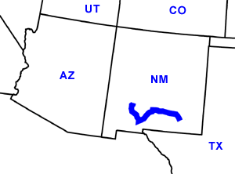

Day Sixteen
Carlsbad, NM - Elephant Butte, NM
Date: 06/26/2002
Distance: 331 miles
Weather: Mostly sunny. High 90's
Annoying, loud bird, who has a dozen distinct calls, wakes us up early.
We pack up and shower, then head to the Living Desert State Park.
We get there just after it opens. There is only one other group there. The park has lots of animals (that apparently aren't fit for the wild) and lots of plants. We saw bobcat, bald eagle, black bear, prarie dog, elk, snakes, wolf, and cactus. There were also lots of creatures we did not get to see- the gila monster and hairy pigs were out of order.
We continue west towards the White Sands National Monument. There is an 8 mile drive through the dunes made of beautiful white sand. Largest gypsum sand deposit in the world or something. We get out and walk on the dunes. It's bright, and very hot, so the exploration is short.
Nearby, the government tests missiles, (several miles north is the Trinity site, where the atomic bomb was first tested). While we were at the visitor center two Stealth bombers flew overhead. They were not very stealth, at least to the eyes and ears, we left our radar at home.
We continue on, not sure exactly how far we'll get. We end up stopping in Truth or Consequences, New Mexico where there is suppose to be a cool Hostel. We check it out and get a grand tour from an interesting (weird) guy who went to UMass Amherst. They have private rooms which are actually in trailers. They had natural spring baths, and all sorts of other stuff like a meditation area. The price however was 52 dollars which was as much as a hotel, so we decided to move on.
The hostel guy talked about interstates being closed in the area because of the nearby forest fires. We're getting some news via NPR and front page newspaper headlines, but aren't sure what specific areas have fires, and which roads might be closed.
We head to the grocery store for some dinner stuff, and then to the Elephant Butte State Park. We luck out again. There's plenty of empty sites and it has an amazing view of the Rio Grande.
The camp sites each have simple shelters to block the sun and rain. We take a walk on the beach with the dog, make dinner, and then sweat ourselves to sleep.
{kind=link}